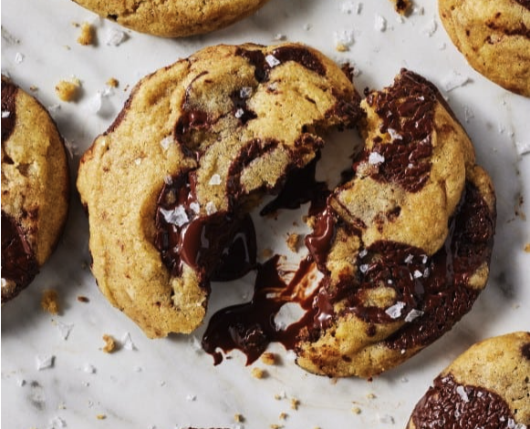

Home
Perfect Chocolate Chip Cookies
These cookies are crispy on the outside, chewy on the inside, and loaded with chocolate chips.

Recipe Description
Who doesn't love a classic chocolate chip cookie? This recipe creates the perfect balance of crisp edges and chewy centers. It's a family favorite and ideal for bake sales, parties, or just a sweet treat at home.
Ingredients
- 1 cup unsalted butter, melted
- 1 cup brown sugar
- ½ cup granulated sugar
- 2 large eggs
- 2 teaspoons vanilla extract
- 2 ¾ cups all-purpose flour
- 1 teaspoon baking soda
- ½ teaspoon salt
- 2 cups semisweet chocolate chips
How to Make Chocolate Chip Cookies Step-By-Step
Here’s how to make the best chocolate chip cookies from scratch:
- Preheat oven to 350°F (175°C) and line baking sheets with parchment paper.
- Mix melted butter, brown sugar, and granulated sugar in a bowl.
- Beat in eggs and vanilla extract until smooth.
- In a separate bowl, whisk together flour, baking soda, and salt.
- Gradually combine wet and dry ingredients, then fold in chocolate chips.
- Scoop dough onto prepared baking sheets and bake for 10-12 minutes.
- Let cool for 5 minutes before transferring to a wire rack.